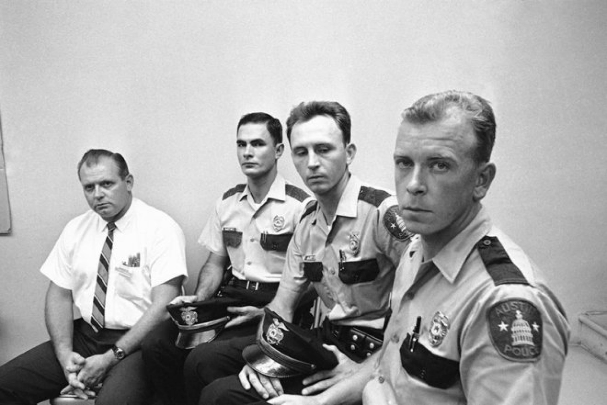

Four men who braved the deadly accurate sniper fire by Charles Joseph Whitman from the Univ. of Texas tower met with newsmen in Austin on August 2, 1966. From left to right are: Allen Crum, university co-op employee; and Austin policemen Ramiro Martinez, Houston McCoy and Jerry Day.
A group of students crowded around a boy being dragged across the ground, as more joined to watch. Across the street at the University Co-op, Allen Crum, the first floor supervisor, took notice and assumed it was a fight between students. He walked over to intervene. In his deposition, Crum said once he realized the boy had been shot, he immediately tried to stop the blood flow as he heard more gunshots. At the time, he did not know where they were coming from.
After showing another student how to care for the wounded boy, he ran back to the Co-op, ushering employees and customers away from the windows, before heading back outside to stop the traffic and clear the street.
Crum said he wanted to call his wife.
“My wife knew it was my lunch hour and I knew that she would worry,” his deposition reads.
When he couldn’t find a phone in what is now the FAC, he decided to use the phones available in the Tower.
Now aware of the shooter’s location, he waited until shots were fired from the East side of the Tower before running across the street into the Main Building. Inside, he located a phone, but the lines were busy. University of Texas guards told him they had phoned the police already. He met Austin Police officer Jerry Day, who was already there, and offered his help. Someone came inside the Tower to tell them there were more casualties to the south; Crum and Day went to see. His deposition describes a man lying on the grass, and two more men and two women lying on the concrete.
Crum and Officer Day did not know where in the tower the shooter was because the shots were fired rapidly, from all directions.
“At this time we both thought that there was a possibility of two people in the tower,” Crum wrote.
Shortly after, they were joined by another officer, Ramiro Martinez and Texas Department of Public Safety trooper W.A. Cowan who had an old Remington .30-caliber rifle and a revolver.
“I asked this man if he would give me the rifle, I would volunteer to [go up to the observation deck] with him,” Crum wrote in his deposition. As the men made their way to the observation deck, Crum asked Martinez, “Are we playing for keeps?”
“You’re damn right we are,” Martinez replied.
Crum, and officers Day and Martinez forced through a makeshift barricade the shooter had assembled and began exchanging fire with the gunman. Once the sniper had been shot, the officers suggested someone wave a white flag to cease the shots coming from the ground. Crum then took out his handkerchief and waved it on the west and south sides of the building.
In an interview with the Austin-American Statesman 25 years after the shooting, Crum said he had moved to Las Vegas and worked as a repairman for slot machines before moving outside of the city.